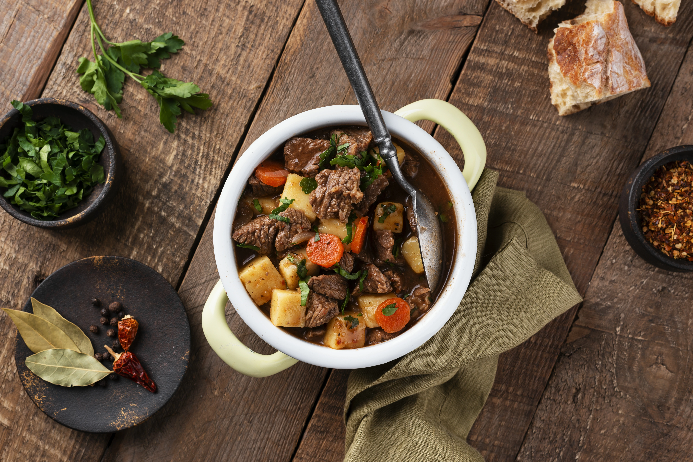

Welcome to Traac Recipes
The Omelette

- Crack 2 eggs into a bowl and whisk.
- Heat a non-stick pan with butter over medium heat.
- Pour in eggs and cook until edges start to set.
- Add fillings (e.g. cheese, veggies, ham) to one half.
- Fold omelette in half and cook until fillings are heated through.
Beef stew

- Brown the beef cubes slowly in a large pot with some oil over high heat, until they're nicely browned on all sides.
- Add sliced onions, minced garlic, and chopped carrots to the pot; cook until the veggies are softened and fragrant.
- Pour in some rich beef broth, a spoonful of tomato paste, and a sprinkle of fresh herbs; stir everything together to combine.
- Let the stew simmer gently, covered, for 2-3 hours or until the beef is tender and falls apart easily.
- Season the stew with salt and pepper to taste, then serve it hot, garnished with fresh herbs, if desired.
Pasta
- To start, boil a large amount of salted water in a big pot, then add your preferred type of pasta, making sure to stir it gently to avoid tangling.
- Cook the pasta until it reaches the right consistency, which is usually when it still has a bit of firmness in the middle, after around 8-12 minutes.
- While you're waiting for the pasta to cook, heat some olive oil in a big frying pan over medium heat, then add your chosen ingredients for the sauce, such as minced garlic, chopped onions, and sliced tomatoes.
- AOnce the pasta is ready, drain the water and add the pasta to the frying pan with the sauce, mixing everything together until the pasta is evenly coated.
- Finally, serve the pasta hot, adding some grated Parmesan cheese and fresh basil leaves on top if you like.